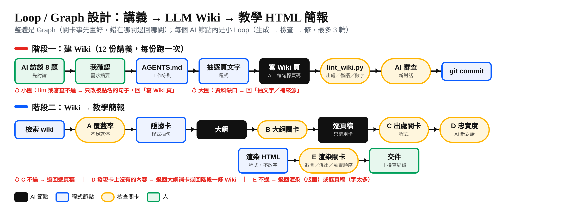

資料結構 LLM Wiki × Graph 與 BFS/DFS
TAICA 生成式AI 第十週作業 · 12 份 CSE 215 講義 → LLM Wiki → 教學 HTML 簡報
教學 HTML 簡報 →16 頁，給完全不會的人；含可操作的 Stack／Queue 與 DFS／BFS 動畫 LLM Wiki →概念頁、來源頁、AGENTS.md、需求訪談、檢查紀錄、反思（公開版不含講義全文） GitHub repo →完整 git 紀錄、檢查腳本
TAICA 生成式AI 第十週作業 · 12 份 CSE 215 講義 → LLM Wiki → 教學 HTML 簡報
教學 HTML 簡報 →16 頁，給完全不會的人；含可操作的 Stack／Queue 與 DFS／BFS 動畫 LLM Wiki →概念頁、來源頁、AGENTS.md、需求訪談、檢查紀錄、反思（公開版不含講義全文） GitHub repo →完整 git 紀錄、檢查腳本